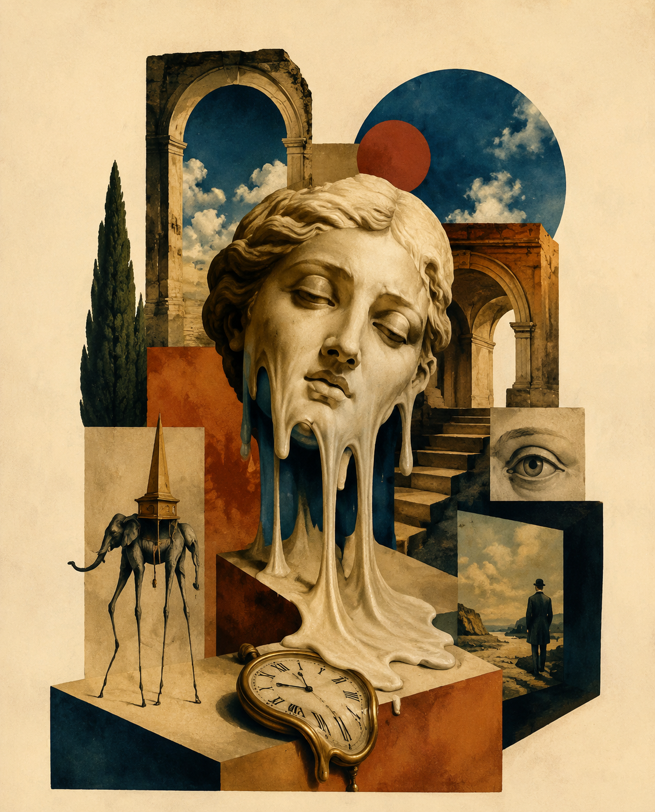
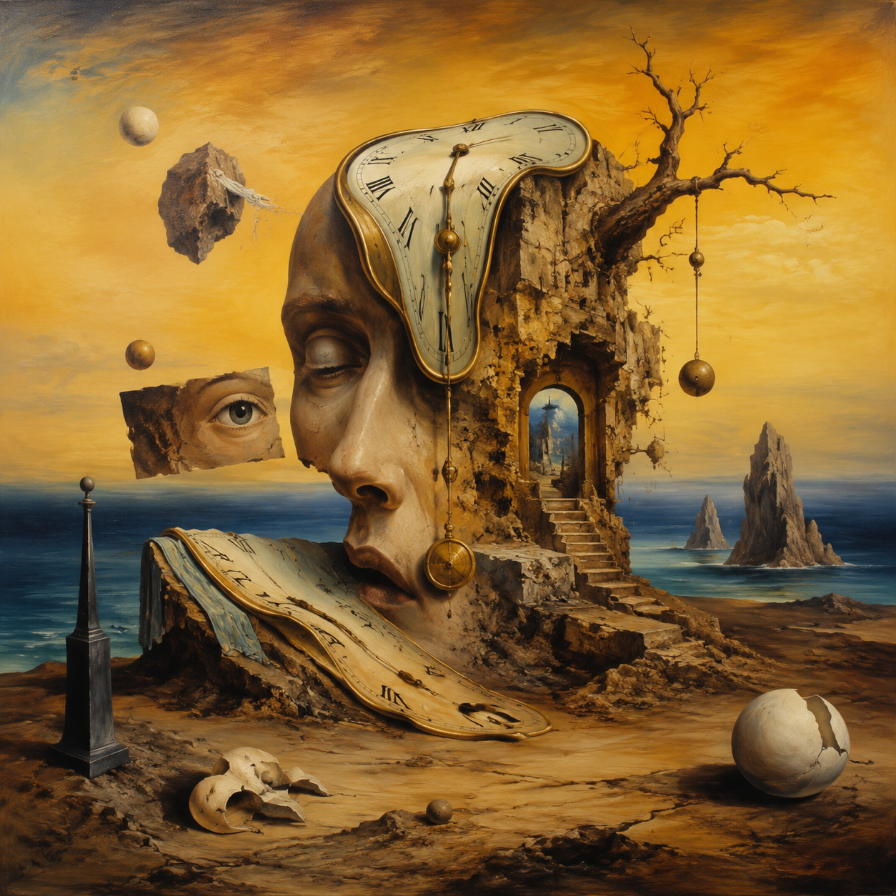
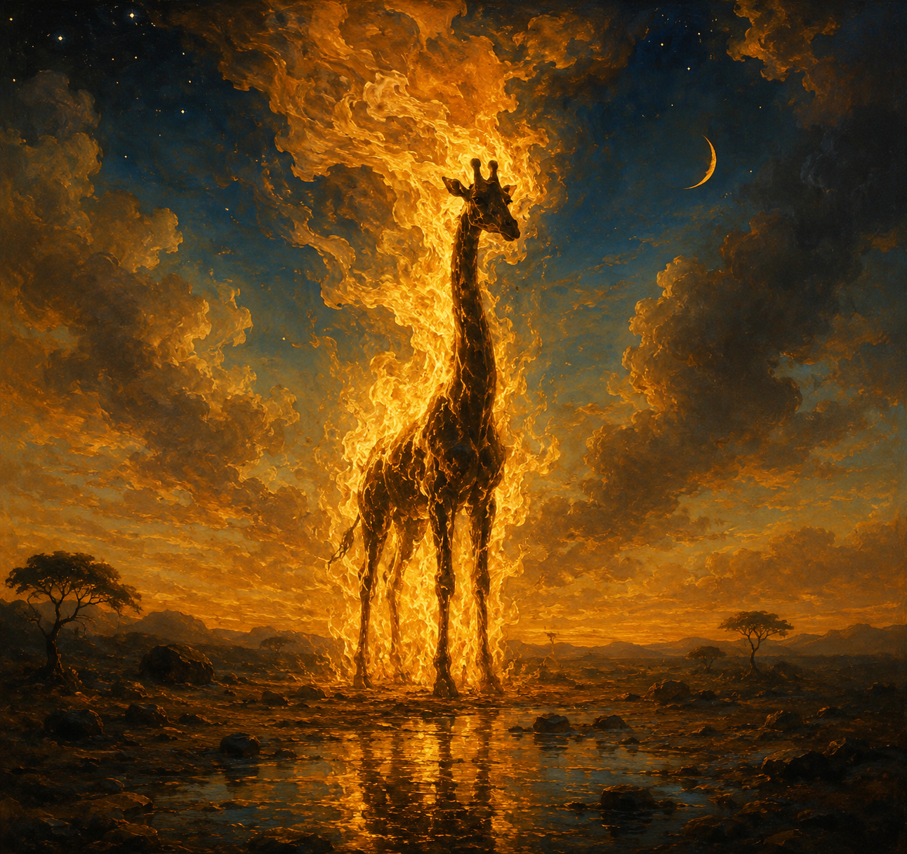
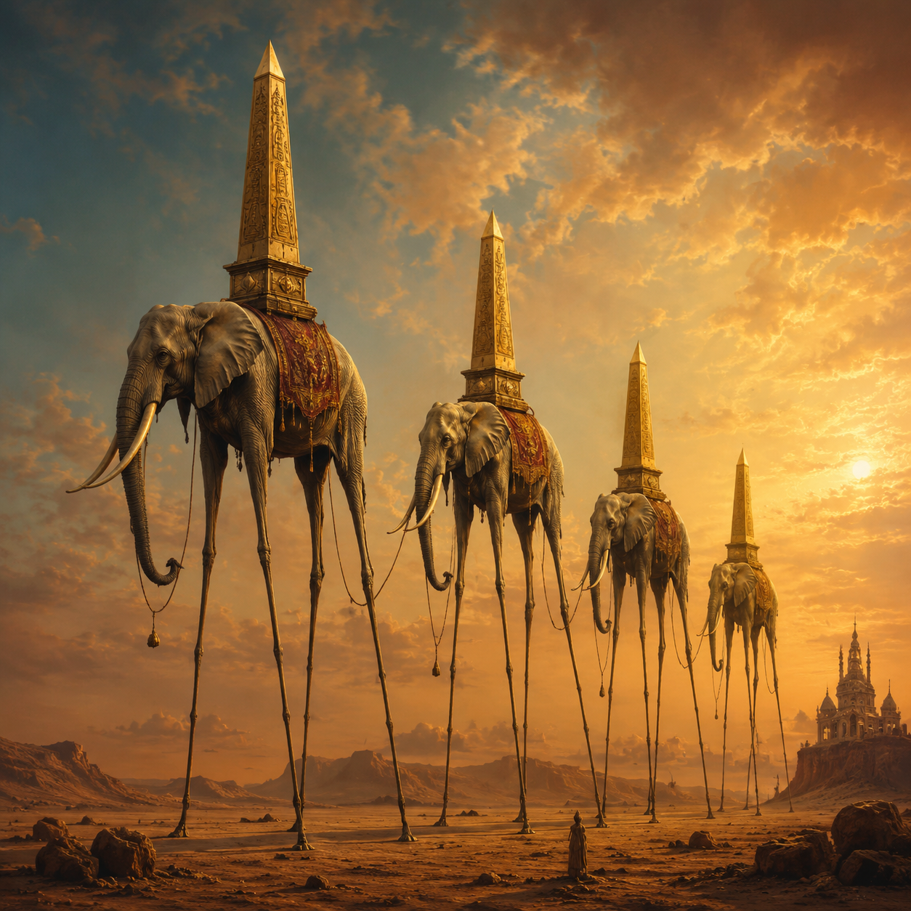
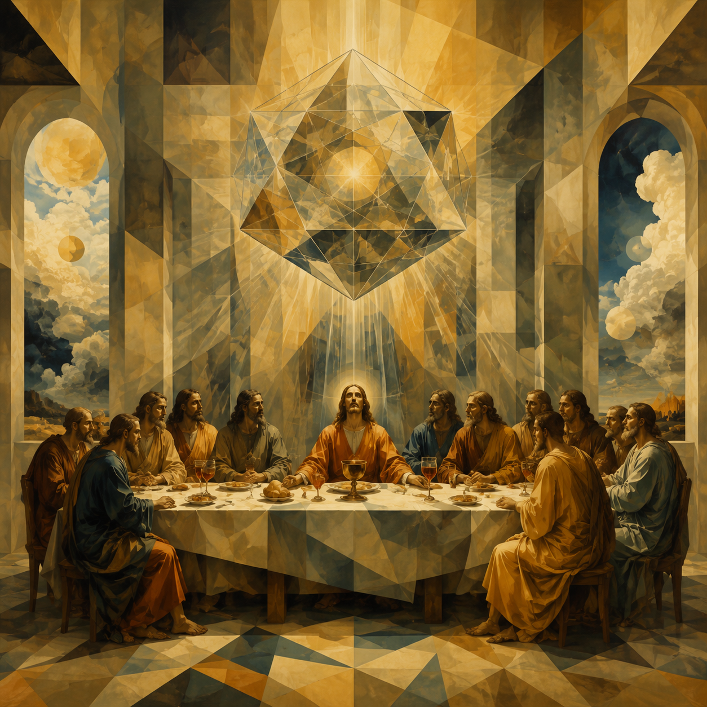
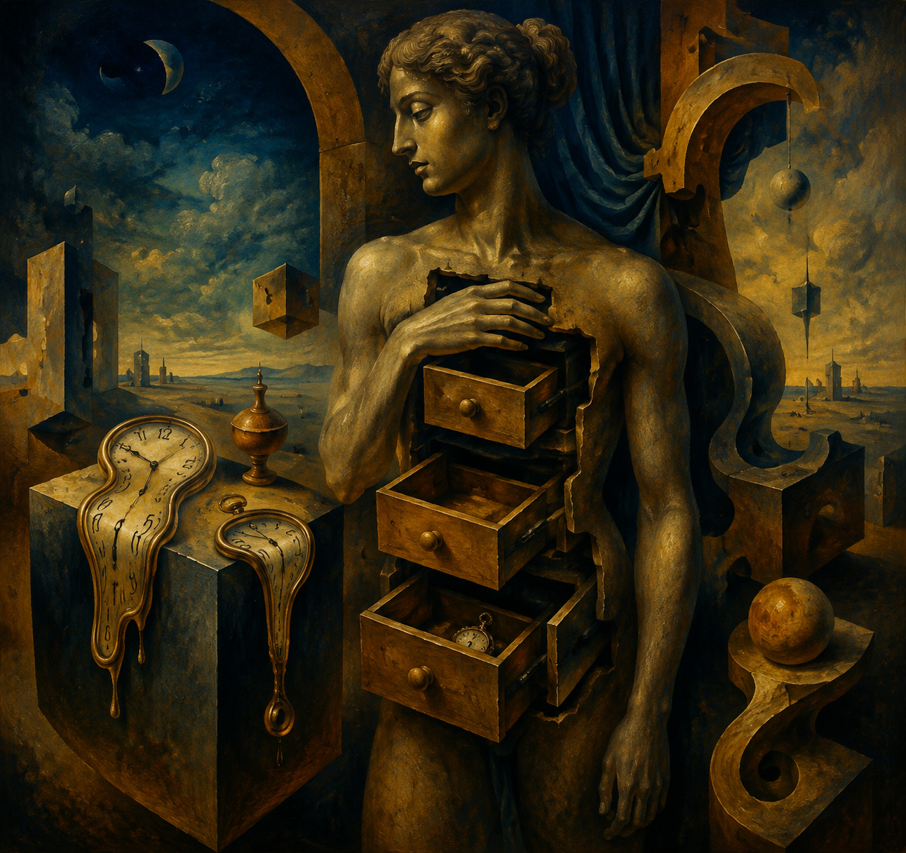

Art Gallery · 2026
SURREALISM REPORT
致敬达利诞辰 118 周年——超现实主义视觉风格研究报告。
2022.1.20

Table of Contents
PART ONE
超现实主义运动起源
PART TWO
达利的创作方法论
PART THREE
影响与遗产
Manifesto
"超现实主义不是美学运动——它是一种革命性的认知方式。通过非理性的路径，我们抵达更深层的真实。"
— André Breton, 1924
正式加入运动
达利在巴黎结识布勒东，正式加入超现实主义运动。
艺术作品
涵盖油画、版画、雕塑、电影、摄影等多种媒介。
创作年限（岁）
1904 年生于菲格雷斯，1989 年于同城离世。

1° · IMAGINE
画中软塌的时钟悬挂在荒凉的海岸上，暗示时间的主观性与记忆的不可靠。这幅仅 24×33cm 的小画成为 20 世纪最具辨识度的艺术符号之一。
达利称灵感来自"卡门贝尔奶酪在太阳下融化"——将日常经验转化为梦境般的视觉语言。
MoMA 永久馆藏 · 1931
Method
达利独创的"偏执狂批判法"——主动诱导幻觉与妄想状态，在清醒意识中捕捉潜意识图像。既是创作方法，也是一种认知工具。
"我与疯子之间唯一的区别是，我没有疯。"
03 · Gallery
从《记忆的永恒》到《燃烧的长颈鹿》，从《圣安东尼的诱惑》到《最后的晚餐》——达利的作品横跨超现实主义、古典主义、原子神秘主义多个时期。
每一幅都是对潜意识的精确解剖——用最精细的古典技法描绘最荒诞的梦境。




LeishiFu Style Factory
超现实主义不是逃避现实——是用更深层的现实取代表面的真实。
leishifu-surreal-gallery · v1.1 · 2026